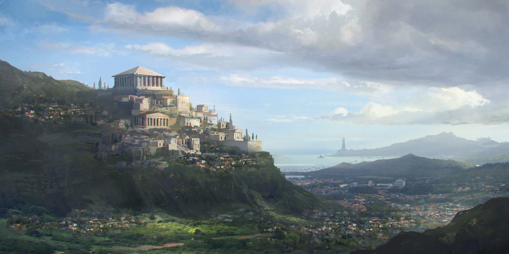

Det er mørkt rundt deg. Uansett hvor mye du prøver å åpne øyene virker det som om de er lukket.
Du prøver å se deg rundt, og får plutselig øye på et svakt, pulserende lys. Lyset ser ut til å hviske noe til deg...
I det du går nærmere lyset blir hviskingen høyere og du kan høre en stemme som snakker.
Den ser ut til å snakke til deg:
- Er du en sønn av Zevs eller datter av Hera?
Stemmen gjenntar de samme ordene om og om igjen...

Ved lyden av ordene dine blir lyset sterkere og sterkere. Stemmen som snakket tidligere blir svakere jo sterkere lyset skinner.
Du kan svakt høre ordene: "En sønn av Zevs blir født i dag..."
Lyset blir mer og mer intest til alt du ser bare er hvitt.
Du kjenner en varme mot kroppen og en svak stemme hviske deg i øret:
- Min sønn, storhet venter på deg bak horisonten...

Du løper ned trappen hjemme og klarer neste å velte faren din sin kyrass fra veggen.
I det du retter den opp igjen får du øye på deg selv i den blanke bronsen.
"Der er du! Ta disse pengene og kjøp appelsiner fra agoraen før kjøpmannen drar."
Moren din dytter deg ut av døra og du løper smilende mot markedet.
Agoraen i Athen var det sentrale torget i bystaten Athen. Det er også den mest kjente agoraen.
Du kan lukte stålet fra myntverket blande seg med den gode lukten fra bakeriet.
Markedet er i full gang, det er veldig folksomt, og du tar en snarvei for å komme deg til kjøpmannen.
"Hehe, hva har vi her?" En gjeng med banditter står bak deg, og du klarer nesten å miste myntene du har i hånden.
- Hva har vi her? Hva skal en ung gutt med så mye penger? Gi oss pengene så blir ingen skadet.
GAME OVER!
Tiden er ute!
Du dytter til banditten og han faller på bakken i det du løper ned en bakgate. Du kan høre at de roper etter deg,
men du fokuserer på å kommme deg vekk. Foran deg ser du et trebord, tenk fort!
Dette er en serie med tidsbegresede hendelser. Trykk på start for å begynne hver hendelse.
Du klarer å hoppe over trebordet uten problemer og fortsetter å løpe!
Foran deg ser du et høyt gjerde med et hull du kan skli under, tenk fort!
Du klarer å skli under gjerdet, reiser deg raskt opp og ser friheten i slutten av gaten!
Siste innspurt nå, bare å sprinte alt du kan!
Du klarer å komme deg unna bandittene og beholder pengene dine.
Med seier i tankene og smil om munnen ser du ikke forna deg mens du løper og kræsjer i en armert soldat.
Bandittene ser ser soldaten og løper vekk, mens du klarer bare å stå der i frykt.
Redd prøver du å gå vekk, men beina dine er låst i det soldaten bøyer seg ned på kne.
Det virker som om tiden står stille i det soldaten bøyer seg ned mot deg. Du legger opp armene frykt, men det som skjer overasker deg.
Soldaten legger hånden sin på skulderen din: "Går det bra, barn?"
Du reiser deg opp og forklarer at du har vondt i tennene og må kjøpe noen appelsiner til mor.
Vakten kjøper appelsiner til deg og går med deg hjem.
Moren din blir blir veldig overasket over å se deg gå inn døra med en væpnet soldat, men roer seg raskt ned.
Soldaten forteller at han kjenner din far og at han må forbli i Argos en stund til.
Dagen er ferd med å bli veldig anderledes i det soldaten forteller deg at du har fått oppgaven å levere et viktig
Dokument fra Athen til Sparta. Dette skulle være din fars oppgave, men siden han er ute er det du som må gjøre det.
- Jeg skal hjelpe pappa!
- Jeg vet du vil, men vær forsiktig.
Dagen i dag har vært lang og du må gjøre deg klar til å reise ut i morgen.
Bank, bank, bank
Du våkner av at moren din står i døra på rommet ditt med en lærbundet pakke.
Du går trøtt ut av senga, kler på deg og gir hun en klem.
Frokosten smaker fantastisk med de ferske appelsinene fra dagen før. Du hiver i deg så mye orker å spise.
Etter at du har spist tar du på deg skoene, gir moren din en god klem
Med innholdet i gaven på deg og en liten tåre i øyet gjør du deg til å reise. Soldaten fra igår står klar med en hest til han og deg.